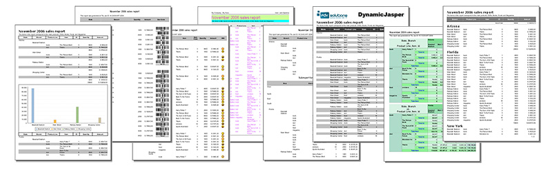

DynamicJasper (DJ) is an API that hides the complexity of Jasper Reports, it helps developers to save time when designing simple/medium complexity reports generating the layout of the report elements automatically.
DynamicJasper (DJ) is an API that hides the complexity of Jasper Reports, it helps developers to save time when designing simple/medium complexity reports generating the layout of the report elements automatically. It creates reports dynamically, defining at runtime the columns, column width (auto width), groups, variables, fonts, charts, crosstabs, sub reports (that can also be dynamic), page size and everything else that you can define at design time.
DJ keeps full compatibility with Jasper Reports since it's a tool that helps create reports programmatically in a easy way (it only interferes with the creation of the report design doing the layout of the elements).
You can use the classic .jrxml files as templates while the content and layout of the report elements are handled by the DJ API.
| IMPORTANT for version 2.X users |
|---|
| Version 3.0.0 adds breaking changes , please read this changes note to see what changed |
The DynamicJasper Playground is an example webapp made in GWT and it is inteded to show all the capabilities and potential that the DynamicJasper API provides.
In a near future we will release this playground as a component ready to integrate to your web application.
See it working online!!! or download the war file or source code

Outsource report development and get hi quality low cost dynamic reports.
Get your first report in minutes with the geting started guide.
Already coding? get the answer of your particular need in the HOW-TO section.
Find support from the community in the forums